Human resource of course has a cost. It is interesting to see how much a particular contract costs the company in term of human power in relation to the invoiced amounts.
We will take the following example: Our two employees Harry Potter and Cedric Digory both work on a Consultancy pack for our customer Smith&Co. Harry is paid 18€ p.h. and Cedric's salary is 12€ p.h. We would like to track their timesheet costs within the accounting app, and compare them with the revenue of the consultancy service.
Configuration
First, install the three applications necessary to use this functionality, namely Accounting, Sales and Timesheet. Enter the apps module name and install them.

Next you will need to enable analytical accounting. To do so enter the accounting app. Select and tick the Analytic accounting option (see picture below)
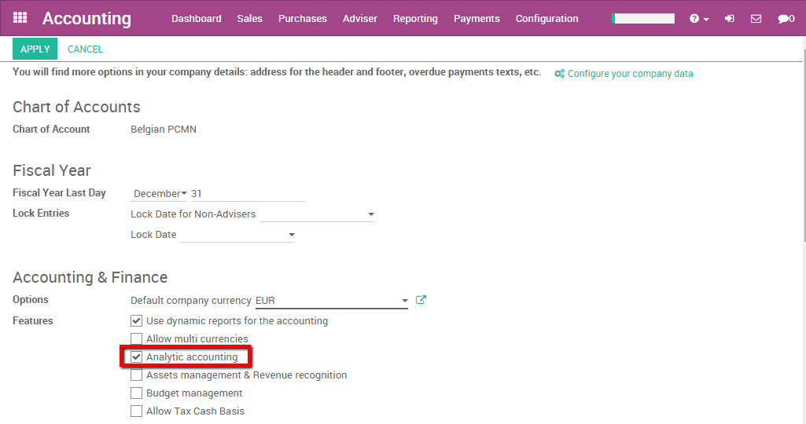Apply your changes.
Create an employee
In order to check the revenue of an employee you need to have one. To create an employee enter the employee app. Select Employees and create a new employee, fill in the name and the basic information.
On the employee sheet enter the HR settings tab. Here you are able to specify the Timesheet Cost of your employee. In this case Harry has a cost of 18 euros / hours. We will thus fill in 18 in this field.
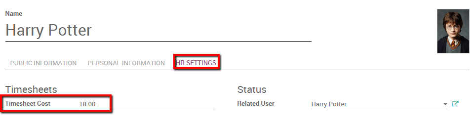Note
If you want the employee to be able to enter timesheets he needs to be related to a User.
Repeat the operation to create the Cedric Digory employee. Don't forget to specify its related user and Timesheet costs.
Issue a Sales Order
We created two employees called Harry Potter and Cedric Diggory in the Employee app. Both of them will work on a consultancy contract for our customer Smith&Co where they will point their hours on a timesheet.
We thus need to create a sales order with a service product invoiced based on time and material and tracked by timesheets with hours as unit of measures.
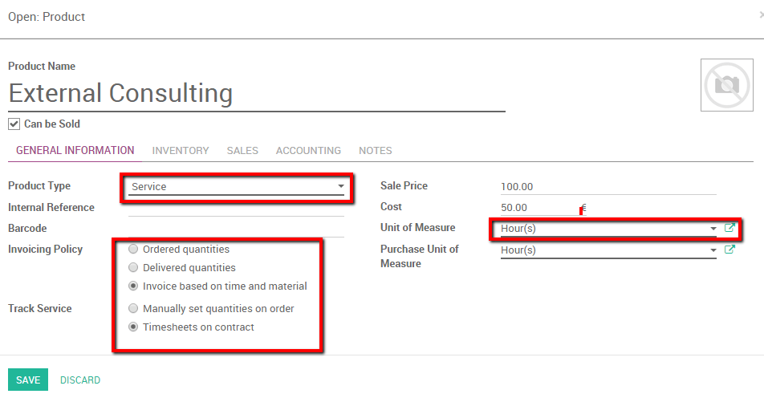For more information on how to create a sales order based on time and material please see: How to invoice based on time and material (Work in Progress).
We save a Sales Order with the service product External Consulting. An analytical account will automatically be generated once the Sales Order is confirmed. Our employees will have to point to that account (in this case SO002-Smith&Co) in order to be able to invoice their hours (see picture below).
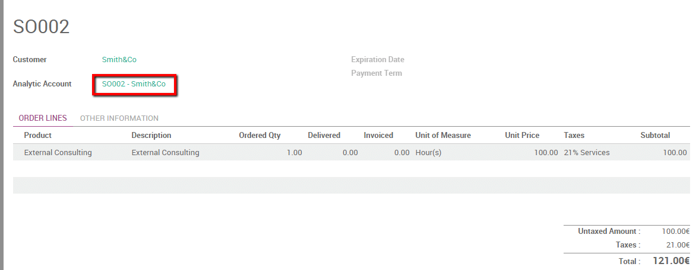Fill in timesheet
As an employee linked to a user, Harry can enter the timesheet app and specify his timesheets for the contract. On Harry's account we enter the timesheet app and enter a detailed line pointing to the Analytical Account discussed above.
Harry worked three hours on a SWOT analysis for Smith&Co.
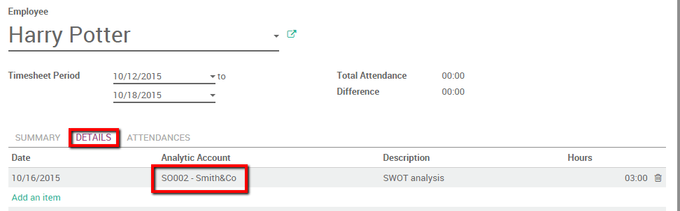In the meantime, Cedric discussed businesses needs with the customer for 1 hour and specified it as well in his personal timesheet, pointing as well on the Analytic Account.
In the Sales Order we notice that the delivered amounts of hours is automatically computed (see picture below).
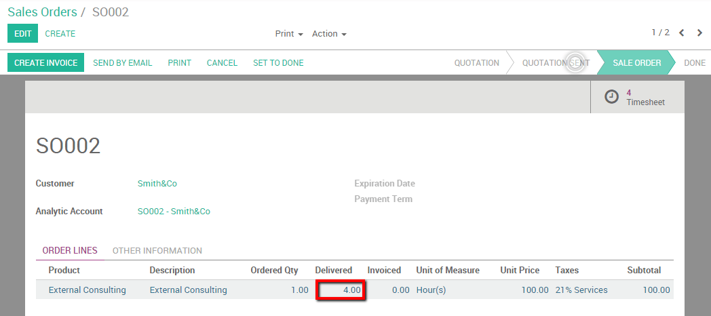Analytic accounting
Thanks to analytic accounts we are able to have an overview of HR cost and revenues. All the revenues and cost of this transactions have been registered in the SO002-Smith&Co account.
We can use two methods to analyze this situation.
Without filters
If we pointed all our costs and revenues of the project on the correct analytical account we can easily retrieve the cost and revenues related to this analytical account. Enter the accounting app, select .
Note : you can specify a period for Analysis. If you want to open the current situation you should keep the fields empty. We can already note the credit and debit balance of the account.
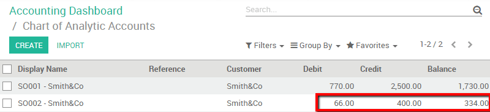If we click on the account a special button is provided to have the details of cost and revenues (see picture below).
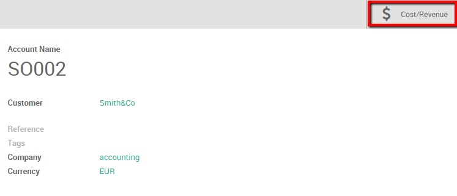click the button Cost/Revenue to have an overview of cost and revenues with the corresponding description.
With filters
We can thus filter this information from the Analytic Entries.
Enter the accounting app, and click on . In this menu we have several options to analyse the human resource cost.
We filter on the Analytic account so we can see the cost and revenues of the project. Add a custom Filter where the Analytic Account contains the Sales Order number.
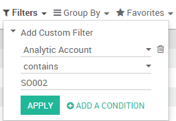In the results we see timesheets activities and invoiced lines with the corresponding costs and revenues.
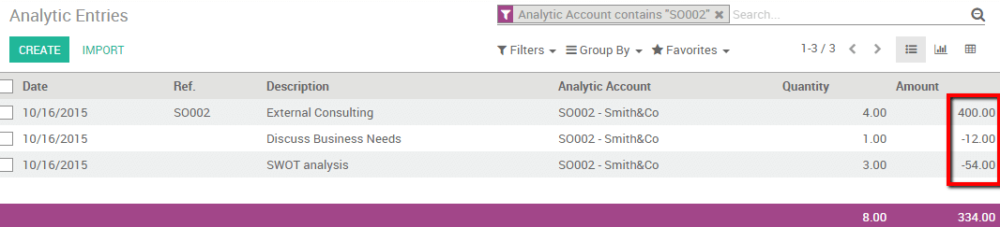We can group the different analytical accounts together and check their respective revenues. Simply group by Analytic account and select the Graph view to have a clear overview.
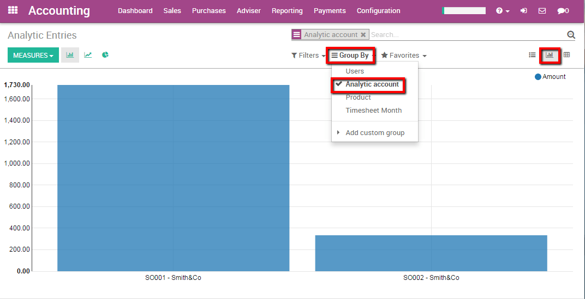